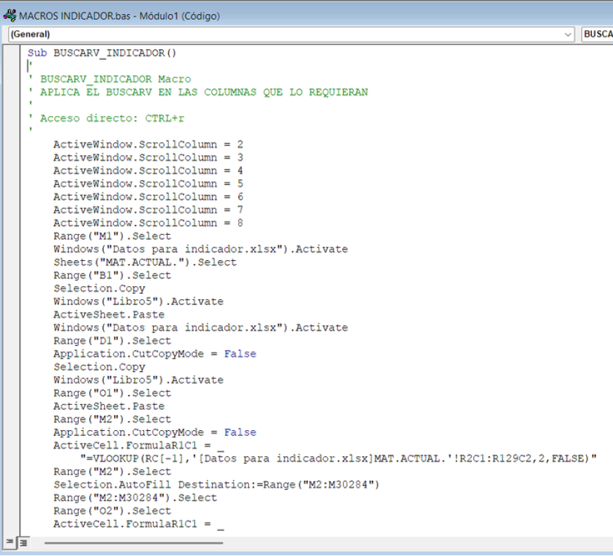

Diego Alonso Castillo
Bachiller en Administración de Empresas
Master in Management Candidate - Universidad del Pacífico
Enfoque en automatización, análisis de datos y mejora continua aplicada a procesos empresariales.
Ver Experiencia Descargar CVExcel VBA
- Automatización de reportes
- Macros VBA
- Fórmulas masivas
- Optimización de tiempos
Power BI
Creación de dashboards y visualización de indicadores.
SQL
Consultas y gestión básica de datos.
Control Interno
Seguimiento de procesos y análisis de riesgos operativos.
Experiencia Destacada

Automatización de Reportes
Automatización de reportes operativos mediante VBA, optimizando procesos manuales y aplicación masiva de fórmulas para análisis de indicadores.
Resultados
0
Reducción de tiempo en procesos manuales mediante VBA.
0
Registros procesados automáticamente en reportes operativos.
KPIs
Visualización de KPIs y soporte en toma de decisiones.
Sobre mí
Bachiller en Administración de Empresas con experiencia en automatización de procesos, análisis operativo y soporte en gestión de indicadores. Interesado en la aplicación de herramientas tecnológicas y análisis de datos para optimizar procesos y mejorar la toma de decisiones.
Proyectos
Automatización VBA
Desarrollo de macros para automatización de reportes operativos y aplicación masiva de fórmulas.
Dashboards Power BI
Visualización de indicadores y seguimiento operativo mediante dashboards empresariales.
Contacto
Email: diego.a.castillo.moreno@gmail.com
LinkedIn: linkedin.com/in/diego-castillo-041b5821b